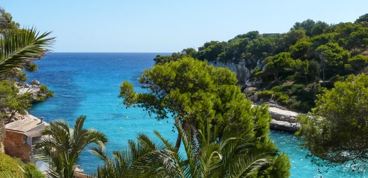
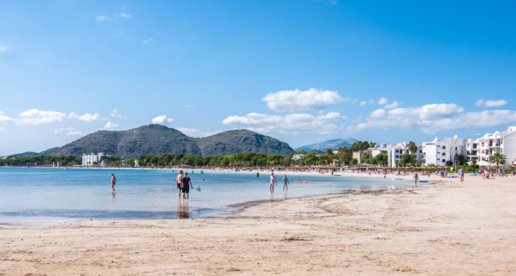
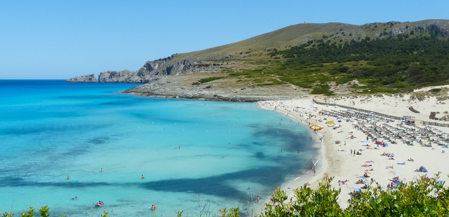
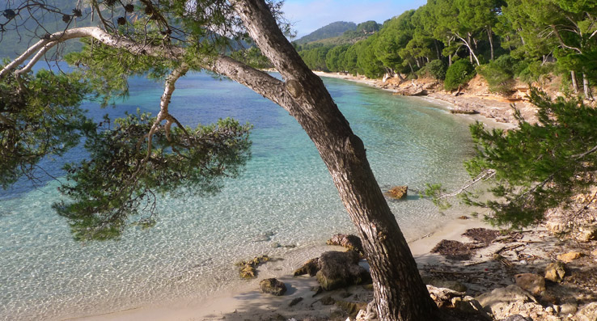

Mallorca ist ein Paradies für Sonnenhungrige und Wasserfans. Als Ziel für einen Strandurlaub ist die Baleareninsel fast das gesamte Jahr über geeignet.
Neben großen Stränden mit touristischer Atmosphäre findest du vor allem im Norden und Osten von Mallorca so manches völlig naturbelassene Kleinod. Manche dieser Naturstrände und Badebuchten kannst du nur auf einer kleinen Wanderung erreichen. Hier stellen wir einige der unserer Meinung nach schönsten Strände von Mallorca vor, die eine ideale Kombination aus Strandatmosphäre und Naturerlebnis bieten.

Die größte Stranddichte auf Mallorca findet sich im nordöstlichen östlichen Teil der Insel. An der Bucht von Alcudia und vor dem Ferienort Puerto de Alcudia liegt die Playa de Alcudia. Zusammen mit der benachbarten Playa de Muro bildet sie den größten zusammenhängenden Strand auf den Balearen.

Ebenfalls im Nordosten Mallorcas und im südlichen Teil der Bucht von Alcudia liegt die Playa de Muro, die touristisch ausgesprochen gut erschlossen. Auf der dahinterliegenden Strandpromenade befinden sich zahlreiche Hotels, Bars, Restaurants und Einkaufsmöglichkeiten. Direkt am Strand sorgen einige Strandbars für das leibliche Wohl der Gäste.
Die Badebucht erreicht ihr vom Ort und vom Parkplatz aus über eine Treppe. Danach erwartet euch ein sehr idyllisches Strand-Szenario: Der breite Sandstrand wird von einer naturbelassenen Dünenlandschaft eingerahmt. Im Umland wechseln sich grüne Hügel und Felsenklippen miteinander ab.

Die Playa Formentor ist etwas mehr als einen Kilometer lang. Ihr Hinterland prägen Hügel, Felsenformationen und Pinienwälder, die an einigen Stellen bis an den Strand reichen und für Schattenplätze sorgen. Eindrucksvoll sind nicht nur der feine, weiche Sand und der Ausblick auf die Pollenca-Bucht, sondern auch das Bergpanorama der Serra Tramuntana.

Die idyllische Badebucht im Südosten – in etwa fünf Kilometern Entfernung der Provinzhauptstadt Santanyi und des Ferienortes Cala Santanyi – ist völlig naturbelassen. Eingeschlossen wird sie durch bewaldete Felsformationen, die geübten Kletterern eine Sportmöglichkeit und allen anderen ein eindrucksvolles visuelles Erlebnis bieten.